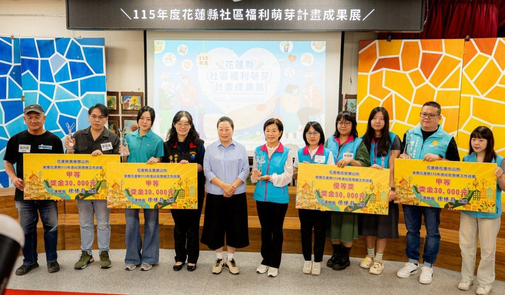

吉安鄉摘優等第一 稻香仁和雙獲獎 游淑貞7年奪6優等1甲等

可樂電子報小編/編輯
花蓮縣政府於8日舉辦「社區福利萌芽計畫靜態成果座談會」暨評鑑表揚頒獎典禮，吉安鄉公所再傳捷報，榮獲鄉鎮市公所組「社區發展工作評鑑優等」第一名，獲頒獎金5萬元；轄內稻香社區發展協會及仁和社區發展協會也雙雙獲獎，分別榮獲社區評鑑卓越組優等第一名（獎金10萬元）及績效組甲等（獎金5萬元），展現公所與社區團隊攜手深耕在地、推動福利服務的豐碩成果。

吉安鄉公所每年針對轄內18個社區發展協會辦理先行考評，依據各社區推動成果及發展需求，提供分級輔導與資源協助。鄉長游淑貞表示，感謝花蓮縣政府多年來透過評鑑、輔導及資源挹注，陪伴各社區從實務中累積經驗、從評鑑中持續成長。回顧過去7年，吉安鄉在縣級評鑑中累計獲得6次優等、1次甲等肯定，充分展現長期深耕社區的穩健實力。

縣長徐榛蔚肯定各社區發展協會的努力與成果並表示，縣府推動社區福利萌芽計畫，透過深耕社區、小旗艦計畫、共生社區及高齡人才培力等方式，協助社區盤點在地需求、凝聚服務人力，逐步發展長者關懷、兒少陪伴、婦女培力、社區防災及世代共融等多元服務，讓樂齡長者發揮專長、促進世代交流，實踐「施比受更有福」的服務精神。未來也將延續「大手牽小手」的核心理念，鼓勵成熟社區帶領小型社區共同成長，發展在地特色，讓福利服務遍地開花。

此次獲獎社區各具特色。吉安鄉稻香社區發展協會以數位機會中心（DOC）為平臺，積極推動AI應用與數位學習，協助中高齡居民提升數位能力，並透過SWOT分析盤點社區優勢與發展方向，持續深化婦女及兒少培力，展現創新服務能量。仁和社區發展協會則以福利社區化為核心，整合福氣站、綠色照顧、社區照顧據點及兒少數位安全教育，並結合環保志工與自主防災團隊，打造兼具生活關懷、安全防護及永續發展的幸福社區。

活動最後在社區經驗分享交流中圓滿落幕；稻香及南昌社區發展協會受邀進行經驗分享，交流參與金卓越選拔的實務經驗，激盪更多創新服務思維。游淑貞欣見社區發展積累豐碩成果指出，社區發展不能單靠公部門資源，更需要凝聚居民參與及志工服務的力量。透過各社區發展協會攜手合作，落實共辦、共好、共融與共學，讓有限的人力及資源發揮最大效益，使關懷服務深入社區每個角落，也讓居民在參與服務的過程中看見自身價值，形成正向循環。

吉安鄉公所感謝所有社區理事長、志工及居民長期以來的付出與投入，未來將持續扮演社區最堅實的後盾，深化三級輔導機制，改善社區活動中心軟硬體設施，整合在地資源，並鼓勵青年及新住民參與，推動地方創生與文化傳承，陪伴各社區穩健發展，攜手打造互助、共好、共融的幸福吉安。
📸 更多現場紀實影像


🌟 掌握花蓮在地第一手資訊・歡迎訂閱追蹤
深度紀實報導、在地精采影音專題，第一時間接收最新消息！